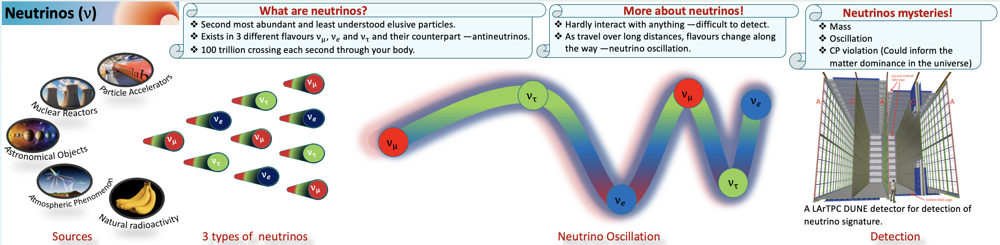
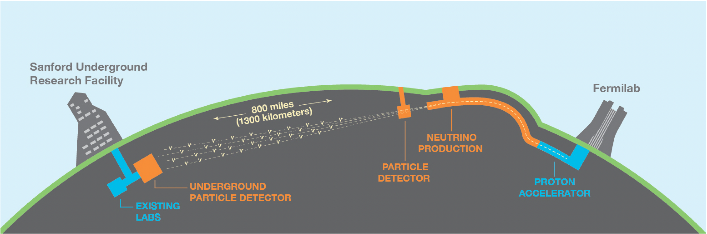

Neutrino
Neutrinos are the most abundant massive fundamental particles in the universe. Despite their abundance, they are among the least understood particles within the standard model (SM).
They exist in three known flavors—electron, muon, and tau—and can oscillate, or change from one flavor to another, as they travel. This oscillation implies that neutrinos have mass, a discovery that challenged the Standard Model, which initially considered them massless.
Neutrinos are remarkable for their very low interaction probabilities, allowing them to traverse vast amounts of matter without being absorbed, a characteristic that offers unique insights into the origin of the universe.
Interacting only via the weak force or gravity, and being electrically neutral, neutrinos are challenging to detect and study. Approximately 100 trillion neutrinos pass through the human body every second. They are produced by natural sources such as stars (including the Sun), supernovae, the Earth’s atmosphere, and radioactive decay. Studying neutrinos offers potential answers to profound questions, such as: “Why is there more matter than antimatter in the observable universe?”—and ultimately, helps us understand the very nature of our existence.
Despite recent advances, key questions remain: the absolute mass of neutrinos, the ordering of their masses (mass hierarchy), and whether neutrinos and antineutrinos behave differently—a difference that could illuminate the mystery of matter-antimatter asymmetry in the universe.

Figure: A description depicting the sources of neutrinos, types of neutrinos, the oscillation phenomenon, and detection by the Liquid Argon Time Projection Chamber (LArTPC) detector used in neutrino experiments such as DUNE.
Deep Underground Neutrino Experiment (DUNE)
The Deep Underground Neutrino Experiment (DUNE) is designed to push the boundaries of our understanding of neutrino physics, exploring key phenomena such as neutrino oscillations, astrophysical neutrinos, and probing physics beyond the Standard Model (SM) with searches for rare processes like nucleon decay.
A primary aim of DUNE is to precisely quantify CP violation in the lepton sector and determine the ordering of neutrino masses, tasks which leverage the substantial mass and advanced imaging, tracking, and particle identification capabilities of Liquid Argon Time Projection Chambers (LArTPCs).

Figure: Schematic of the DUNE project: Fermilab, the host lab and the house of the ND are shown on the right. The neutrino beam will be produced at the Fermilab.
The SURF laboratory is shown on the left. DUNE FD at SURF will receive the neutrino beam from Fermilab, 1300 km away.
The distance between the ND and FD will define the baseline for neutrino oscillation.
My research supports DUNE’s mission by focusing on the essential task of detector calibration, which enables accurate energy reconstruction and, consequently, precise physics measurements.
I analyzed simulated cosmic-ray muon events generated with the MUSUN (Muon Simulation Underground) generator for DUNE’s horizontal drift (HD) far detector (FD), examining the energy and angular distributions of muons and characterizing particles produced by cosmic muon interactions.
I also done analysis on reconstructing and identifying neutral pions in the DUNE FD, achieving neutral pion mass resolution with a statistical uncertainty of 5%, which is instrumental in neutral pion event identification in DUNE FD.
To further improve energy calibration, I developed two novel calibration techniques for the DUNE FD using stopping cosmic-ray muons. The first is a model-dependent approach based on a modified box model, while the second is an absolute energy scale method using a residual range technique.
These calibrations are implemented for the first time in DUNE and are applied to stopping muons, charged pions, and protons in the FD, providing critical energy loss measurements across the detector volume. These efforts are key to unlocking DUNE's potential in uncovering new physics insights.
For more, read my thesis:
Praveen_Kumar_PhD_Thesis